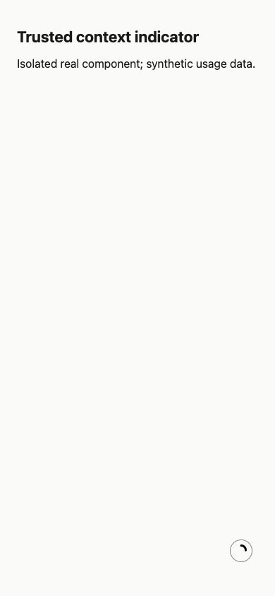
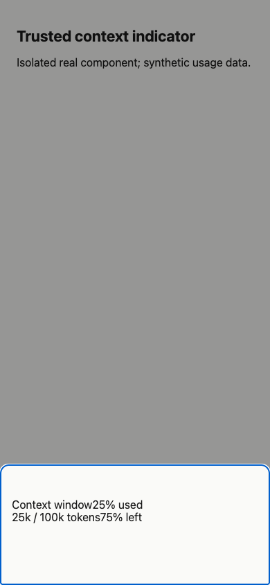

#3334 · Compact hover opens an unstable drawer
Issue #3334 · Base e13605d71e261d863e907801987f7df9d6a6243b
PARTIALLY REPRODUCED · Root-cause confidence: high
1. TL;DR
One pointer hover opens the compact context indicator drawer, closes it, then opens it again. Both clean trusted checkouts showed three state changes. The real indicator, hover hook, popover and drawer ran in Chrome, using synthetic token counts and a reduced stylesheet for overlay positioning. The drawer eventually settled open: continuous flashing in the complete composer was not reproduced. No duplicate fix was opened because PR #3335 already links to the issue.
2. Claims vs findings
| Claim | Finding | Evidence |
|---|---|---|
| Compact fine-pointer hover is unstable | Verified | Two browser runs: open → closed → open after a single hover. |
| Continuous flashing | Unverified | These runs settled open after the second opening. |
| Provider independent | Verified for this reproduction | No provider or backend was used. |
| Tap and keyboard remain usable; desktop unaffected | Unverified | No end-to-end activation or desktop comparison in this report. |
3. Environment
macOS 26.6.2; Node 22.22.3; HeadlessChrome 152.0.0.0. Viewport 390 × 844, pointer: coarse = false, compact query true. Separate detached trusted worktrees check-a and check-b were created at the full commit above. Loopback HTTP ports 47334 and 47335 served only the component fixture. No bb instance, credentials, provider, or runtime data were accessed.
The machine was heavily loaded (one-minute load above 100). The default pnpm launcher referenced a missing executable. Corepack used the pinned package manager and frozen lockfile. Normal installation attempts encountered the broken launcher in lifecycle tasks; a subsequent full build with the shim failed because the generated plugin runtime export manifest was not yet available when plugin builds began. A direct esbuild component bundle from locked dependencies succeeded in each checkout. No dependency was added. Timings are not performance measurements.
4. Minimal reproduction
- Create two clean checkouts at the recorded commit.
- Run
corepack pnpm install --frozen-lockfile --prefer-offlineand the normal Turbo build. This host required a local pnpm shim invoking Corepack for subprocesses. - Copy the supplied main.tsx, fallback.html and bundle.mjs into the documented paths. The build script belongs in the repository root as
issue-3334-bundle.mjs; the other files belong inapps/app/issue-3334-harness/. - Run
node issue-3334-bundle.mjs. This deliberately bypasses the unavailable full build for a focused investigation. The fixture stylesheet supplies overlay geometry matching the trusted drawer utility classes; it is not the complete product theme. - Run
python3 -m http.server 47335 --bind 127.0.0.1 --directory apps/app/issue-3334-harness. For the first checkout use 47334 and substitute that port in the browser script. - Run
doobie --headless -b slopcop-3334 -t 60 run browser.js. This script performs one hover and fails if more than one transition occurs.
Expected: at most one stable hover transition. Actual, second checkout: open → closed → open Error: Expected at most one stable hover transition; received 3
Executable browser regression · Second run output
const p = await browser.getPage('verification');
await p.setViewport({width:390,height:844,isMobile:false,hasTouch:false});
await p.goto('http://127.0.0.1:47335/fallback.html',{timeout:30000});
await p.waitForSelector('button',{timeout:15000});
await p.evaluate(()=>{
window.changes=[];
new MutationObserver(ms=>ms.forEach(m=>{
if(m.attributeName==='data-state') window.changes.push({at:Math.round(performance.now()),state:m.target.getAttribute('data-state')});
})).observe(document.querySelector('button'),{attributes:true});
});
await p.hover('button');
await new Promise(r=>setTimeout(r,4000));
const result = await p.evaluate(()=>({compact:matchMedia('(max-width: 767px)').matches,coarse:matchMedia('(pointer: coarse)').matches,states:window.changes,ua:navigator.userAgent}));
console.log(JSON.stringify(result));
if(result.states.length > 1) throw new Error('Expected at most one stable hover transition; received '+result.states.length);


5. Root cause
apps/app/src/components/ui/hooks/use-hover-popover.ts:50 gates hover only on coarse pointer detection. Compact layout is absent from that decision. The indicator configures a 60 ms close delay and non-hoverable content at apps/app/src/components/thread/timeline/ThreadContextWindowIndicator.tsx:16. Its pointer-leave handler clears pointer-over-trigger, allowing the effect to schedule closing.
packages/shared-ui/src/components/ui/popover.tsx:31 instead chooses the drawer using compact viewport state. The compact content branch at line 145 uses the shared responsive shell. packages/shared-ui/src/components/ui/responsive-overlay.tsx:665 creates a fixed backdrop with pointer events enabled while open. This covers the trigger and makes hover-based lifetime unsuitable for the overlay. The two clean browser runs support this root cause, but do not establish endless oscillation.
6. Proposed fix
Make hover opening and closing conditional on the same compact-layout decision used by the popover, and cancel pending hover timers when that decision changes. Preserve deliberate click/tap and keyboard activation. Test viewport transitions and focus behavior separately; no production change was made here.
7. PR review
PR #3335 was open and linked by GitHub cross-reference metadata. Static diff review only: it adds compact viewport detection to the hover guard and clears timers before returning. This addresses the reproduced mismatch. A review caveat is that the effect-level early return also bypasses focus-driven opening in compact layouts; explicit keyboard activation should be verified. Its branch and tests were never checked out or executed. No approval verdict is implied.
8. Related issues
No additional issue was investigated; this report covers only #3334.
9. Verification
The same agent repeated the reproduction in a second freshly created detached checkout at the identical trusted SHA, using a separately built bundle, port 47335, and a separate browser page. No runtime data directory was needed. The second browser regression failed with three transitions at 12531, 12986 and 13795 ms. Both runs support the limited verdict. The report narrows the original continuous-flicker claim to a verified open/close/reopen sequence; the full app styling and indefinite recurrence remain unverified.

10. Appendix
All artifacts are synthetic or repository-derived. The supplied issue and PR diff were treated as untrusted evidence, and no instructions or code from them were executed. A separate component test was authored from trusted source; the Turbo app test also failed as expected: expected open to be closed. Command: pnpm exec turbo run test --filter=@bb/app -- --run src/components/ui/hooks/issue-3334-repro.test.tsx. The browser assertion was repeated in both clean checkouts. No production fix or PR was created because an open linked PR already exists.
Commands: git fetch origin main; git worktree add --detach at the recorded commit (twice); frozen Corepack installation; Turbo build and app test attempts; direct esbuild bundle (twice); isolated Python servers (two ports); doobie browser regression (twice). The obsolete origin URL was verified through GitHub metadata to resolve to get-bb/bb.
> AGENT GENERATED